古代の"幻の城”屋嶋城（やしまのき）を見てきた。
公開日：

高松市の屋島で復元工事が進んでいた古代山城「屋嶋城」の城壁が完成し、１５日に報道陣に公開された。７世紀後半に築城された記録が残るが、遺構が確認できず「幻の城」とも呼ばれていた。市の担当者は「古代東アジアの歴史を体感できる重要な施設。歴史ロマンに思いをはせてほしい」と話している。
http://www.yomiuri.co.jp/local/kagawa/news/20150615-OYTNT50090.html
「市は２０日午前９時～正午、現地見学会を開く。希望者は屋島山上の「源平広場」に集合」とのことなので、ちょっくら高松まで行ってくることにした。
高松駅まで
6時台に家を出たけれど、最寄りの「本町六丁目」の電停は始発が7時までないので、泣きながら「古町」の駅まで歩く。けれど、そのおかげでオレンジのカラーリングの車両に出会えたので良しとしたい。
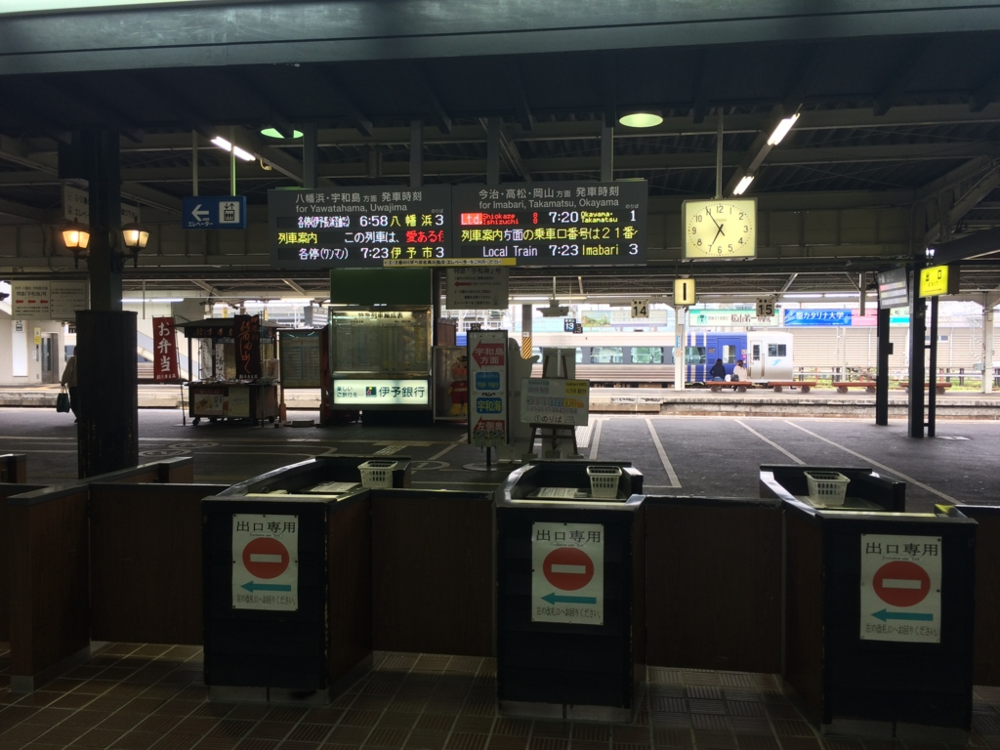
7時前に JR 松山駅に到着。相変わらず、なぜか自動改札機がない。
特急「いしづち」（「しおかぜ」付き）の発車まで、ここで30分待たされる。これだったら別に歩かなくてもよかった。東京じゃないんだから、いい加減汽車の時刻表を調べて家を出る癖を付けねばならぬ。
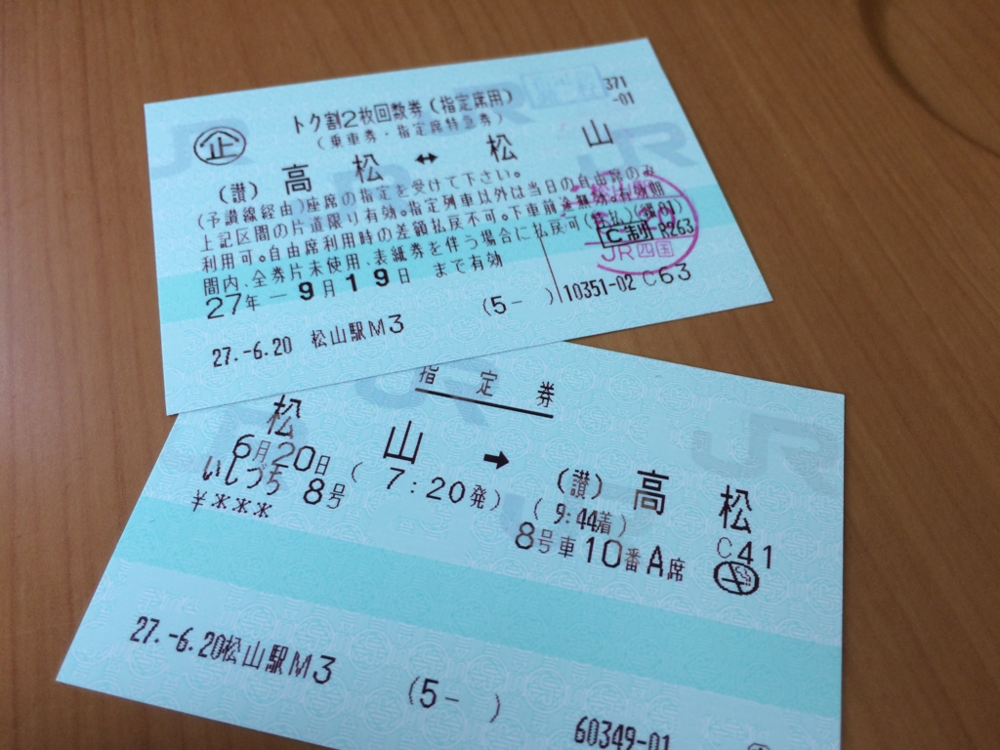
ちなみに、高松までは「トク割２枚回数券（指定席用）」というチケットがお得。往復 12,020円 が 7,600 円になれる。
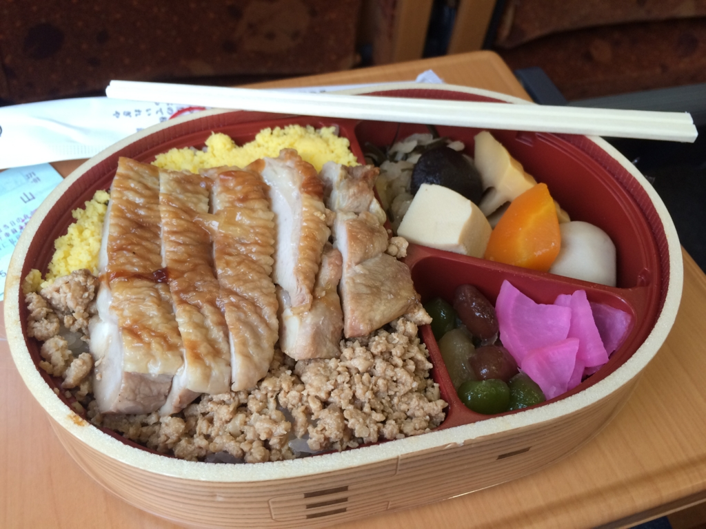
安くなった分は朝ごはん（800円）＋宿代（3,500円）その他もろもろに投入。朝からヘヴィだけど、鶏そぼろ弁当でガッツリ英気を養う。今日はいくら歩かされるかわからん。
途中、艦これとかして遊んでいた様子は、前にも書いたので割愛。結論から言うと、途中から繋がらなくなってイライラしたので、伊予三島からはのんびり本を読んでいた。
高徳線に乗る
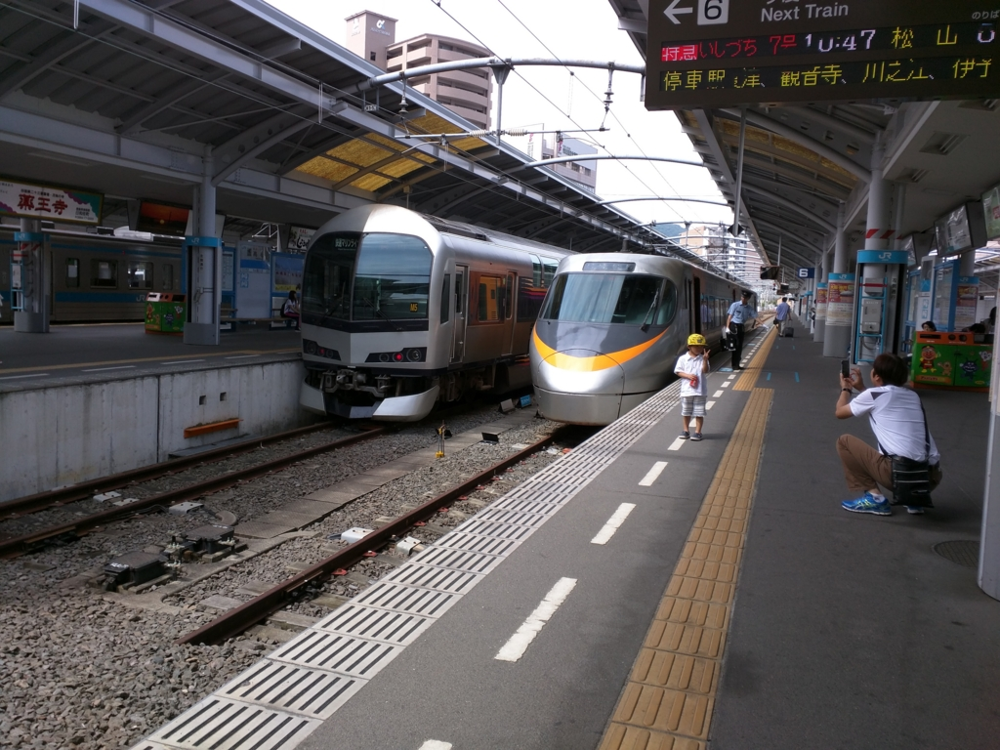
10時前、高松駅に到着。記念撮影している親子がかわいい。
さて、ここからどう行けばいいのか。Google マップで軽く調べたところによると、JR の高徳線でも高松琴平電気鉄道（琴電）でも行けるっぽいが、JR の方がちょっと陸側、屋島からは離れた方に駅があるみたい。
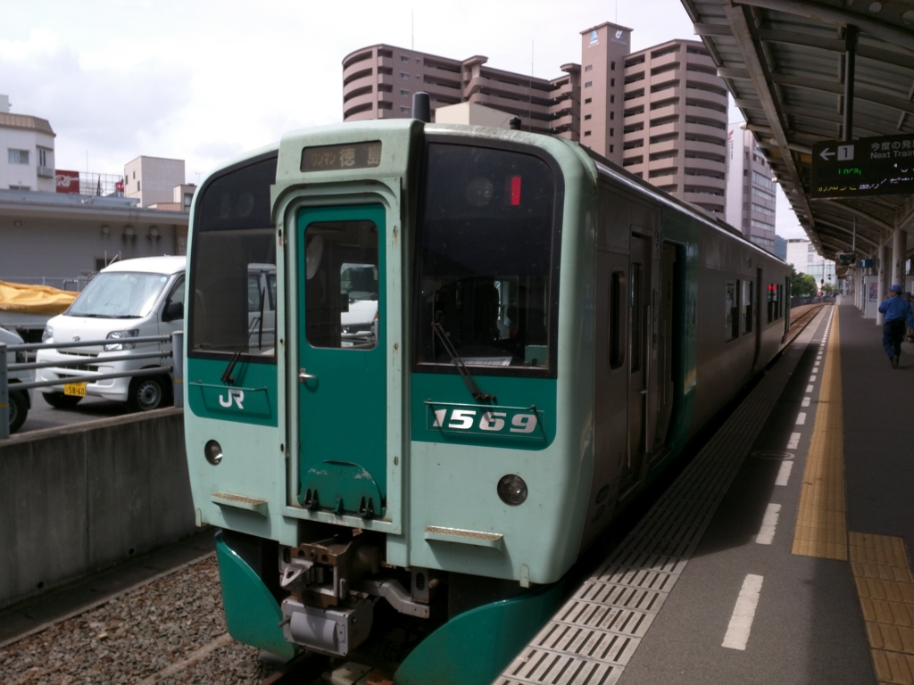
ちょっと迷ったけれど、高松駅から出て琴電の駅を探すのが面倒＆時間が惜しかったので、高徳線を使うことにした。この汽車（※電車ではない）はワンマン運転のようだ。松山から高松まで来るのに使った乗車券が回収されなかったのだけど、キセルとかされたらどうするんだろう。まぁ、特急は改札があるから問題なさそうだけど……ちゃんとお金稼いでるのか不安になる路線だ。
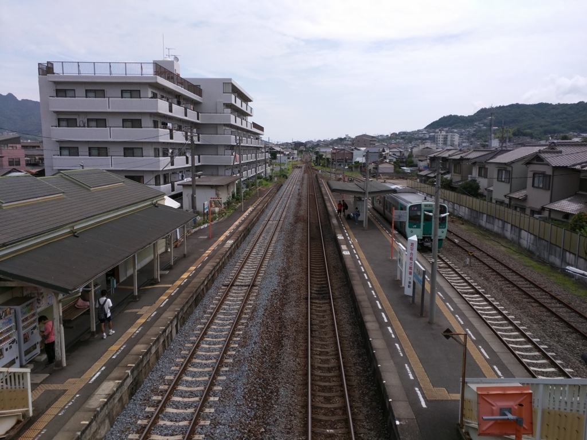
10時半ごろ、屋島駅に到着。ここからはサクッとタクシーでも使いますかねーと思っていたのだけど……
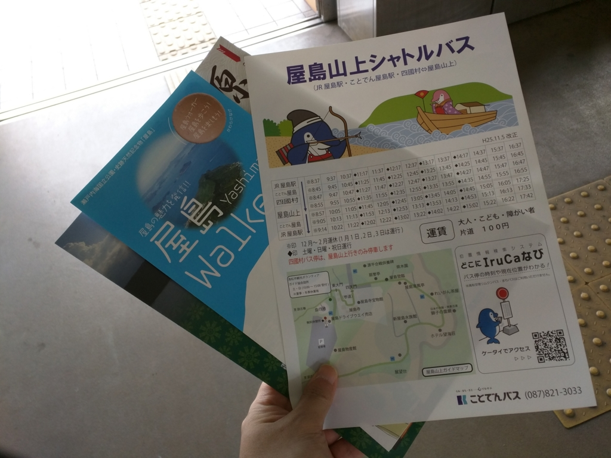
観光ボランティアかなにかのおっちゃんから、100円で屋島まで行けるシャトルバスが出ているという極秘情報をゲット。このシャトルバスは琴電屋島駅を通って屋島山上まで行くとのこと。発車までかなり待たされるが、説明会の最終便には間に合いそうだ。
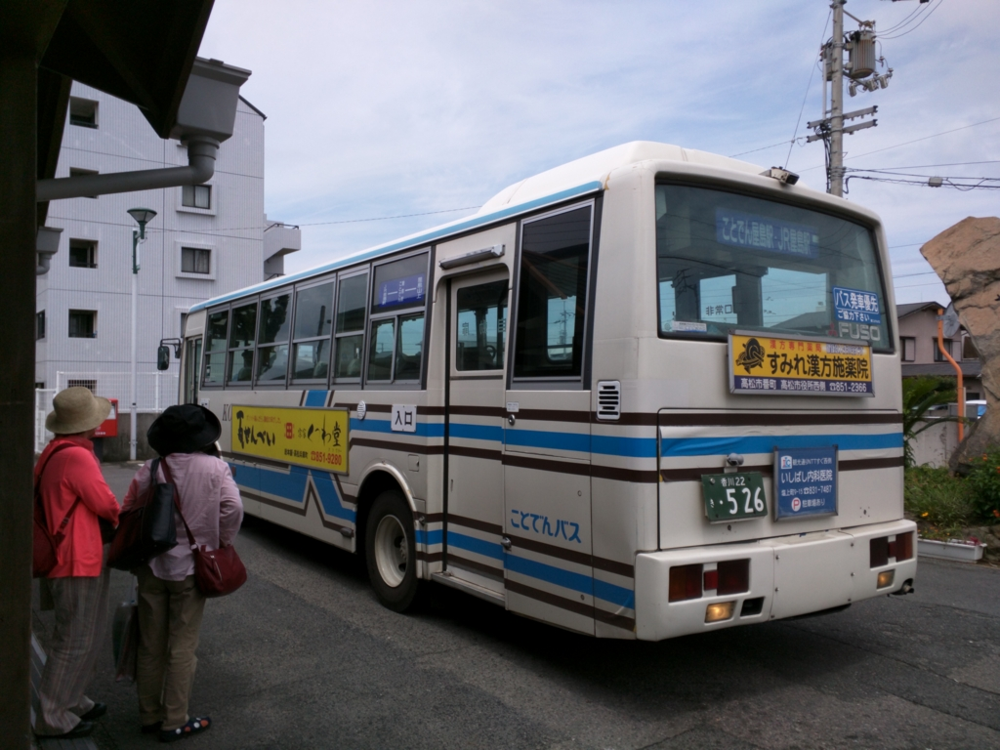
これで屋島まで行くやで。途中のドライブウェーは有料のようだが、景色がとてもよかった。
屋島寺
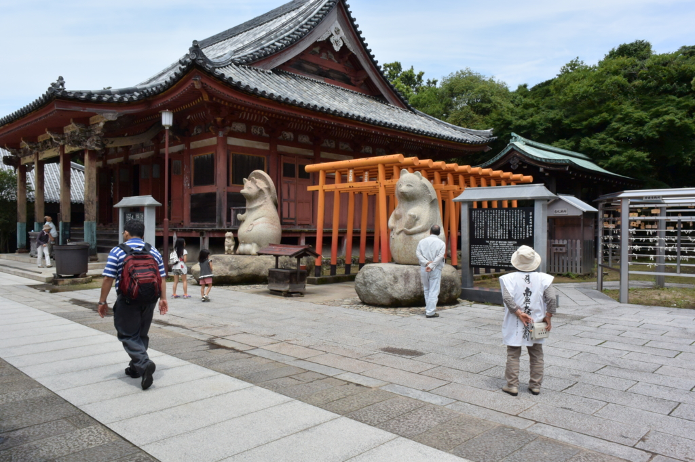
屋島の山上にはお遍路の札所でもある屋島寺がある。今回はこれが目的じゃないので、足早にスルーして説明会の会場へ向かう。
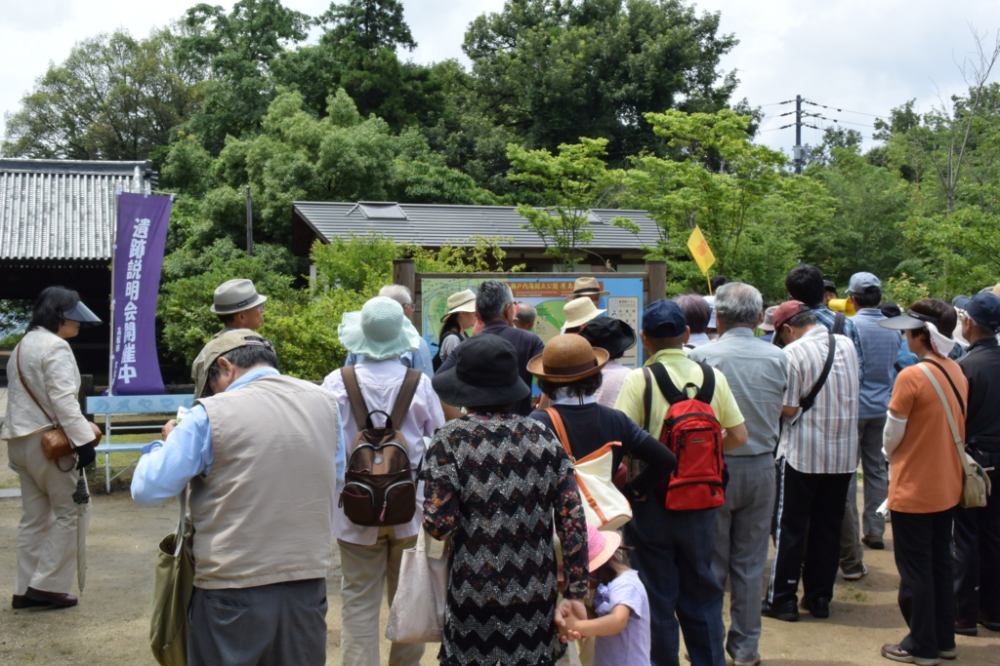
遺跡説明会の会場は、思った以上に賑わっていた。ちょうど出発の時間だったのでそれについていこうと思ったが、実は整理券をもらわなければならなかったらしい。受付が人ごみに隠れていて、気づかなかった。なくなく整理券をもらい、次の回の説明会に参加することにする。
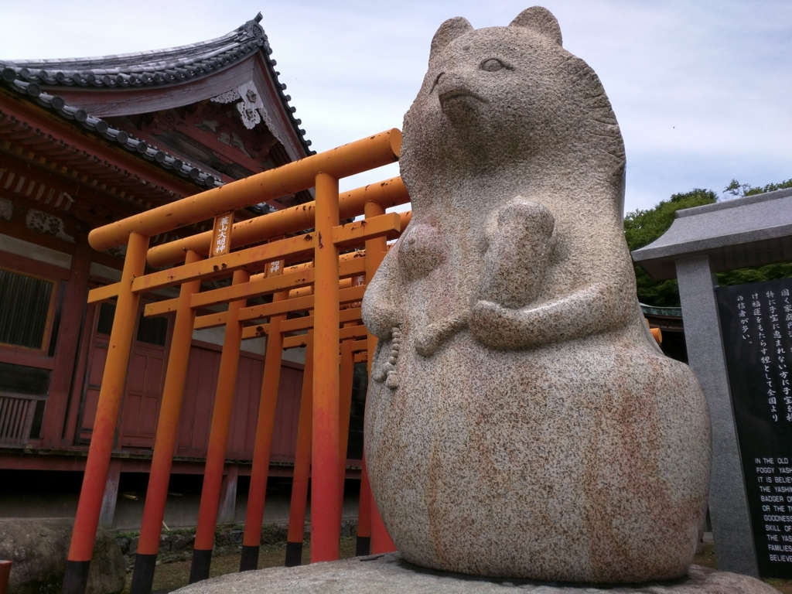
それまで30分ほど時間が余ったので、屋島寺に戻ってオッパイタヌキをローアングルで激写したり、御朱印を書いてもらったりして遊んでた。
寺伝によれば、律宗の開祖である鑑真が天平勝宝6年（754年）に当地を訪れて開創したという。このころに古代山城屋嶋城が閉鎖されたため、その跡地に寺院創設できたと思われる。
明徳2年（1391年）の西大寺末寺帳に屋島寺と屋島普賢寺の名があり、当時は奈良・西大寺（真言律宗）の末寺であったことがわかる。高松藩主生駒一正は慶長6年（1601年）に屋島寺の寺領25石を安堵。近世を通じ、当寺は高松藩の保護下にあった。
それにしても気になるのは、タヌキだよな。なんでタヌキ。
屋島の禿狸（やしまのはげだぬき）は、香川県高松市屋島に伝わる化け狸。太三郎狸（たさぶろうたぬき、たさぶろうだぬき）、屋島の禿（やしまのはげ、やしまのかむろ）ともいう。佐渡の団三郎狸、淡路の芝右衛門狸と並んで日本三名狸に数えられている。スタジオジブリ制作によるアニメーション映画『平成狸合戦ぽんぽこ』に登場することでも知られる。
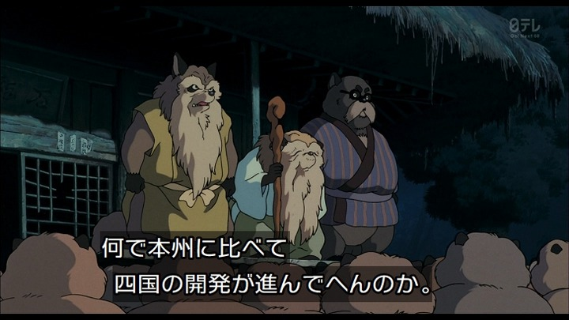
全然知らんかった。
その昔、ある狸が矢傷で死にかけたところを平重盛に助けられ、恩義から平家の守護を誓った。その子孫が屋島の禿狸といわれる。
平家の滅亡後、禿狸は四国八十八箇所の第84番である屋島寺の守護神となった。その変化妙技は日本一と称され、四国の狸の総大将の位にまで上り詰めた。大寒になると300匹の眷族が屋島に集まり、禿狸はかつて自分が見た源義経の八艘飛びや弓流しといった源平合戦の様子を幻術で見せたという
しかも、割と名のあるタヌキらしい。
また、江戸末期に起きたという狸たちの大戦争・阿波狸合戦の際、日開野村（現・小松島市）の狸が人に憑いて語ったところによれば、合戦で金長狸と六右衛門狸が相討ちとなった後、双方の2代目同士によって弔い合戦が行なわれようとしたところ、屋島の禿狸の仲裁によって事が収まったという。後に日清戦争・日露戦争では、禿狸は多くの子分たちと共に満州へ出征して活躍したという
この辺りの記述は、ウィキペディアなのかアンサイクロペディアなのかよくわからんことになっている。「狸たちの大戦争」とか「満州へ出征して活躍」とか何の話や。
もっとも、屋島寺にいるときはそんなこと知らなかったのだけど。ローアングルで撮影するとか、無礼かまして申し訳ない。宝物館にも寄り損ねたので、また機会があれば訪れたいと思う。
屋嶋城
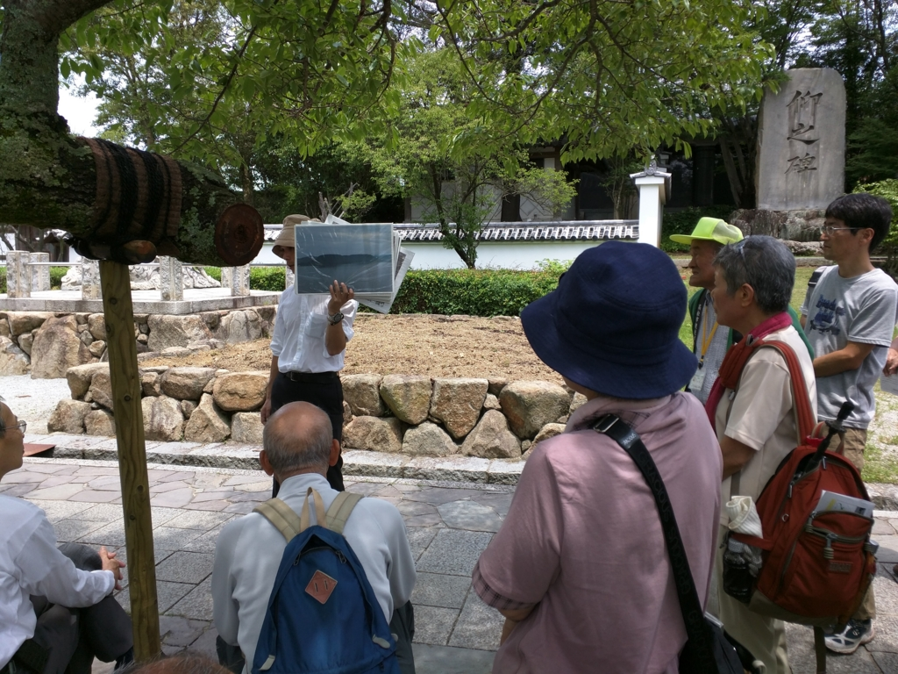
そうこうしているうちに、説明会の時間がやってきた。自分が参加したのが最後の回で、結局、整理券は必要なかった。まぁ、そんなこともあるさ。待ち時間の間に、市役所のヒトがパネルで説明してくれる声に耳を傾ける。
屋嶋城は白村江の戦い（６６３年）で敗れた大和朝廷が、唐・新羅の連合軍による大陸からの侵攻に備えて西日本各地に築城した山城の一つ。日本書紀には６６７年に築城されたと記されるが、遺構が見つからず、その存在は謎のベールに包まれていた。
１９９８年１月、地元の歴史愛好家・平岡岩夫さん（７１）が山中の草陰から高さ約５メートルの石垣を発見。市教委が周辺を調査し、２００２年には城門を確認して城跡と判明し、０８年度から復元工事を進めてきた。
城壁は全長４５メートル、高さ６メートル。幅５メートルの城門の入り口には、高さ２・５メートルの段差を設けて敵の侵入を防ぐ朝鮮の築城技術「懸門」も、忠実に再現された。市は「当時の山城としては、国内最大級の城門」とする。
――で、ここからが本番なのだけど。
http://bushoojapan.com/kancolle/2015/06/25/52977
実はもう違う場所で書いちゃったので、そっちの方に目を通していただければ。なんか詐欺っぽいブログタイトルになってしまって申し訳ありませんな。
いつもは下書きがてらこっちに書いてからあっちにも載せてもらっているのだけど、今回は時事ネタでもあり、こっちのブログのネタが山積みになっていたこともあり、あっちにいきなり書いてしまった。
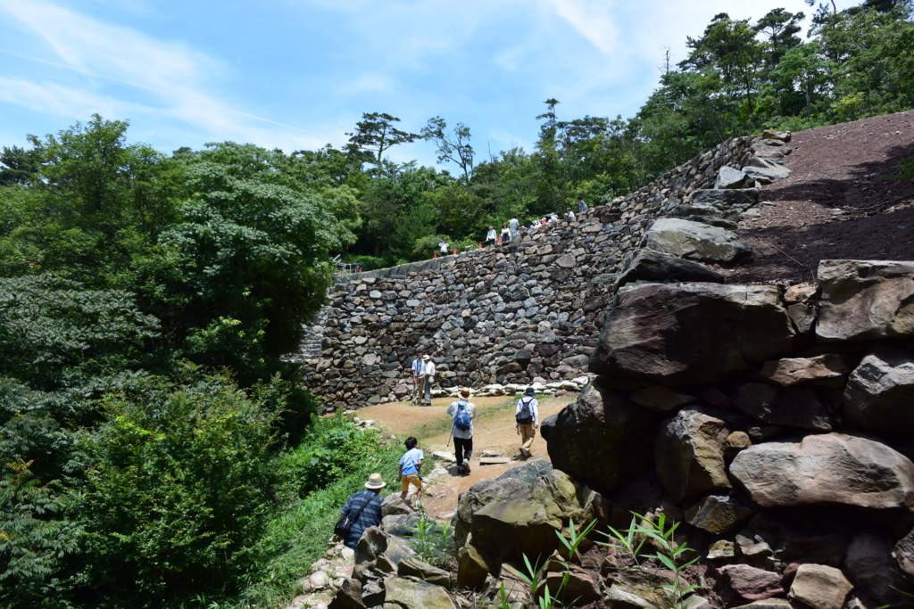
市は今後、城門の奥に位置し、攻め上がった敵を撃退する「甕城」や周囲の遊歩道などの整備を進め、１６年３月に史跡公園として一般公開を始める予定だ。
http://www.yomiuri.co.jp/local/kagawa/news/20150615-OYTNT50090.html
一般の人が気軽に訪れることができるようになるまでもう少し。完成したらぜひ実物を見に来てほしいと思います。